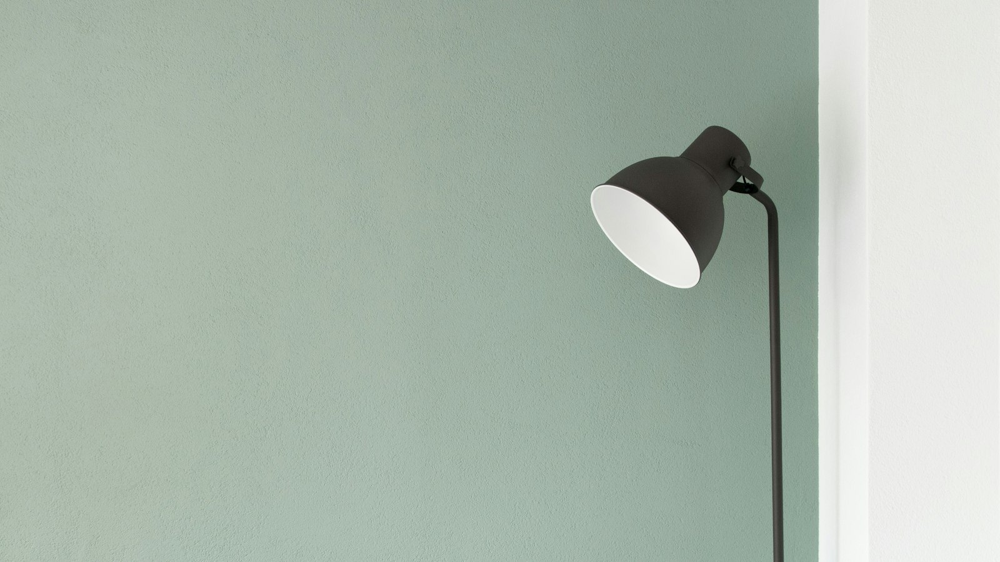

大模型应用开发
从原型到上线，把模型能力变成可靠产品。
- Agent 系统设计 多智能体编排、工具调用、记忆与规划
- RAG 与知识增强 检索策略、重排、引用溯源、评测体系
- Prompt / Eval 工程 提示词体系、回归评测、成本与延迟优化
- 产品化落地 API 设计、前后端集成、可观测性
01 — 关于
您好，我是恒温，一个喜欢写代码和拍照的人。 目前在武汉做和计算机相关的工作，业余时间看书、拍照、瞎折腾。
这里是我的「树洞」，也是个人品牌站：记录技术学习笔记、读书心得、生活随想与摄影， 也分享大模型应用开发的实践。用工程的严谨与文字的温度，把复杂的事写成普通人能懂的故事。
如果你也对 AI 落地、写作，或一座城市的日常感兴趣，欢迎继续往下看。
02 — 能力
左边是工程的冷峻逻辑，右边是写作的温暖共情。
我的工作，是让它们在同一温度下共存。
从原型到上线，把模型能力变成可靠产品。
把专业写成人话，把产品写成故事。
03 — 作品
来自「恒温的树洞」的真实创作：读书笔记、生活随笔与技术思考。 点击卡片可阅读全文。

0505 — 方法
先厘清目标读者、成功标准和限制条件。很多项目的失败，其实是问题定义的失败。
无论是智能体架构还是文章结构，都先搭骨架再填血肉，确保逻辑可验证、可迭代。
用最小原型或样章获取真实反馈，把「我觉得好」换成「读者/用户觉得有用」。
代码要有评测与文档，文字要有节奏与温度。交付的不只是结果，还有可继续演进的系统。
07 — 留言板
欢迎留下想法、建议，或只是打个招呼。 留言基于 GitHub Discussions，用 GitHub 账号登录即可参与。
💬 评论基于 GitHub Discussions，需要使用 GitHub 账号登录
🤝 请保持友善，尊重他人
正在加载 GitHub 留言…
当前网络可能拦截了 giscus.app（GitHub Discussions 评论组件）。
你仍可以去 GitHub 直接留言，或稍后再试。